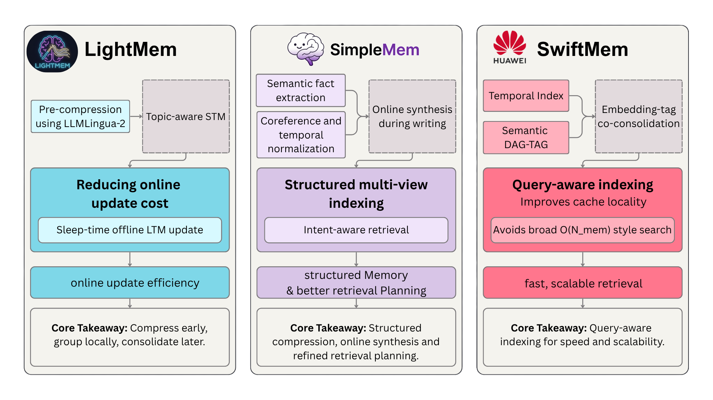

01 / Overview
As we move towards agents and even after so many updates in Large Language Models it still fails to answer on long interactions, which shows the gap in leveraging large context over time. So rather than feeding LLM full long semi-raw/raw context, we in practice deploy memory frameworks that manage storage of facts and information efficiently so that during the retrieval only relevant information is retrieved with best optimization. This becomes even more important as agent systems move beyond a single-chat setting, where memory may need to persist and be shared across tasks, agents, tools, sessions, and devices. The existing approach suffers from fundamental problems: full-context methods cause high inference cost, relying on the entire context layer for retrieval can also become expensive if they search too broadly or retrieve noisy memories, it also shows 3 major types of problems: computation overhead, introducing substantial time, contradictory and redundant facts over time.
Computation overhead and latency comes from long context, like repeatedly processing long histories, updating memory online, or searching large memory stores. In contrast, the Contradictory and Redundant facts problem arises from trying to fix the long context problem wrongly, mainly due to Disconnected evidence and State updates, which is when memory systems store repeated facts, it fails to consolidate updates, or cannot distinguish outdated information from current user state.
Few most common ways the current memory systems were tackled was by utilizing roles, and creating most commonly 2 different types of memory to manage the information, the most common framework is using: Episodic Memory (This stores specific events / experiences / facts from the user's past interactions) and Semantic Memory (This stores generalized knowledge, patterns, preferences, and long-term user traits extracted from many episodic memories).
But as we scale up models and increase the context size, Larger context helps, but it does not guarantee correct retrieval, low cost, or stable long-term memory, since feeding long context does not guarantee correct retrieval of fact and optimised cost; so keeping this in mind a lot of advancement in Memory construction and framework have happened till now, which mainly focuses on: processing - online and offline, eliminating noise and choosing important info, graph relational memory, and MLP based retrieval; Overall, these works focus on reducing compute and latency, improving the connection between memory chunks, making memory temporally accurate, and improving factual reliability without wasting compute, some papers specifically address temporal inconsistency and event-time reasoning.
02 / Why memory matters
Large Language Models and Agents are becoming a big part of the world across every task, from personal assistant to Evals, Compliance, etc. but as the conversation gets long then the performance starts degrading as it have limited context and for the long context conversation retrieving relevant facts becomes compute-heavy, complex and confusing. While large context windows have expanded, they remain insufficient for lifelong interaction and suffer from ”lost-in-the-middle” phenomena.
So we use Memory, Memory is an external non-parametric layer or external layer to the existing Agentic or LLM based System. In future agentic systems, memory will also not remain limited to one isolated conversation. Multiple agents, tools, devices, and workflows may need access to shared user or task memory. This makes memory construction harder because the system must decide what information should remain local to one task, what should become shared/global memory, and how conflicts should be resolved when different agents update the same memory state.
Mainly memory suffers from 11 big types of issues which researchers are trying to solve:
- Disconnected Semantics: Bad structure of storage leads to fragmentation, which leads to bad retrieval or degraded response. [AriadneMem]
- State Update: Evolving information creates conflict with older info. [AriadneMem]
- Temporal Inaccuracies: Memories are arranged by the dialogue time rather than their actual occurrence time. [TSM]
- Temporal Fragmentation: Existing methods focus on point-wise memory, which loses durative information and ignores temporal continuity and semantic relatedness. [TSM]
- Single Granularity: One level of memory cannot capture deep meaning connections, causing partial retrieval or noise. [MemGAS]
- Temporally structured information: Limited support across hierarchical levels leads to fragmented memories and unstable long-horizon personalization. [TiMem]
- Bad clustering of info: Temporal and semantic locality issues hurt retrieval and increase latency.
- Turn in isolation: Treating each conversation turn independently. [LightMem]
- Filtering: Naive or overly restrictive filtering.
- Contradiction between online update and offline updates: Irregularities can cause conflicting information.
- Full interaction histories: Passive context extension causes redundancy or forces expensive filtering. [SimpleMem]
So, these problems suggest that practical agent memory should not only be persistent, but also cost-efficient, temporally accurate, adaptive in granularity, and capable of connecting related evidence across long interactions.
02.1 / Seven failure modes
These issues can be grouped into seven broader failure modes:.
- 01
Information density
Raw history contains filler, repetition, and low-value context. More tokens can create less signal.
SimpleMem · LightMem - 02
Retrieval efficiency
Broad searches over large memory stores increase latency, cost, and irrelevant recall.
SwiftMem - 03
Temporal modeling
Dialogue order is mistaken for event time; persistent and evolving states are flattened into points.
TSM · TiMem - 04
Single granularity
One memory level cannot serve fact lookup, summaries, patterns, and complex multi-hop questions.
MemGAS · TiMem - 05
Disconnected evidence
Facts stored as isolated atoms fail when questions require causal or relational reasoning.
AriadneMem - 06
Update and consolidation
User state changes over time; memory must handle stale facts, contradictions, online writes, and offline consolidation.
LightMem · AriadneMem · TiMem - 07
Shared memory and orchestration
As agent systems become multi-task, multi-agent, and multi-device, memory cannot remain a private store for one conversation. The system must decide which memories should be shared across agents or tasks, which should remain local, how different agents write to the same memory, and how conflicting updates should be resolved.
03 / What recent papers fix
Recent memory systems do not solve these problems through one single design. Instead, they attack different stages of the memory pipeline: what should be written into memory, how it should be compressed or consolidated, how it should be indexed for retrieval, how temporal information should be represented, and how related facts should be connected across long interactions, and how memory should be shared across agents, tasks, tools, and devices. This makes the recent literature useful not just as separate methods, but as a design map for building practical agent memory systems.
Below is how recent memory papers tackle different parts of this problem.
LightMem:
- pre-compression sensory acting as a filter
- A topic-aware short term memory which leverages semantic and topic similarity to dynamically group related utterance into coherent segments
- A sleep time update for long term memory: initially stand in timely to support soft update, later offline: reorganize, deduplicate, abstract, segments to resolve inconsistency
- online soft update = cheap immediate update; offline sleep-time update = later deduplication, abstraction, consolidation, inconsistency resolution
SwiftMem
- Temporal Index for Time-aware retrieval: binary searchable temporal index combining user-specific sorted timelines with global episode lookups
- Semantic DAG-Tag index for content-aware retrieval: to maintain semantic relationship between concepts, along with LLM based tag generation and query-tag routing
- Embedding Index with co-consolidation for scalability: Maintains an embedding index for similarity based retrieval, to add memory fragments, periodically reorganize embedding storage based on semantic tag clusters.
SimpleMem
- Semantic structured compression: apply a semantic density gating mechanism via LLM-based qualitative assessment; uses the foundation model as a semantic judge to estimate information gain relative to history, preserving only content with high downstream utility.
- Online semantic synthesis: inspired by biological consolidation; related units are synthesized into higher-level abstract representation during write phase
- The objective is to improve efficiency under fixed context and token budget.
- Intent-Aware retrieval planning: employ a planning based retrieval strategy that infers latent search intent to determine retrieval scope dynamically.
- Basically 'structured semantic compression': Improve efficiency through principled memory organisation, online synthesis, and intent aware planning.
TiMem
- Organises conversation through a Temporal Memory Tree (TMT).
- Temporal-hierarchical organisation through TMT; organises memory with temporal constraints and order through tree constraints.
- Semantic-guided consolidation that enables memory integration across hierarchical levels without fine tuning.
- Complexity aware memory recall that balances precision and efficiency across queries of varying complexity; a recall plan selects appropriate hierarchy levels based on query complexity.
- TiMem treats temporal continuity as a first-class organising principle for long-horizon memory in conversational agents.
MemGAS
- A framework that enhances memory consolidation by constructing multi-granular association, adaptive selection and retrieval.
- Memory Association: Leverages LLM to generate memory summary and keyword, constructively multi-granular memory units; when new memory is updated, a Gaussian Mixture model is employed to cluster historical memories into an accept set and reject set.
- Granularity Selection: i. Entropy based router adaptively assigns retrieval weights to different granularity by evaluating the certainty of Query relevance. ii. critical memory is retrieved using personalized pagerank and filtered through LLMs to remove redundancy, ensuring a refined and high-quality memory that enhances the assistant's understanding.
Temporal Semantic Memory (TSM)
- Models semantic time for point wise memory and supports the construction and utilization of durative memory
- Takes inspiration from human memory which relies on the time as a scaffold for ordering and linking real-life experiences, supporting coherent recall across long-term memories.
- A memory framework designed to support semantic-time grounded duration aware memory access
- Duration-Aware memory: Builds a semantic timeline through a temporal knowledge graph, aligning memory with when events happen and how long they last; links: temporally continuous and semantically related mentions and consolidates them into a durative summary that captures long-term status.
- Semantic-time guided memory utilization: During memory utilization, TSM incorporates the query's semantic temporal intent and retrieves memories at the appropriate temporal granularity, rather than relying on dialogue-time recency or semantics-only similarity that disregards timing.
- Lightweight hierarchical mechanism: it incrementally updates temporal facts online and periodically consolidates summaries to improve long-term consistency
AriadneMem
- Previous methods solve the problem of 'Disconnected Evidence' and 'State updates' through: i. raw long retrieval, which caused lost in the middle problem + lack of connectivity. ii. Iterative reasoning: which works but increases the latency and increases the token usage increasing the cost.
- SimpleMem helps but since it treats the memory as a set of isolated atoms without intrinsic links, SimpleMem is forced to fall back on the expensive planning loop of strategy, it uses multi-hop reasoning, invoking the LLM, which increases latency and token consumption.
- From iterative planning to structural traversal: instead of LLM, a graph utilizing algorithmic bridge discovery and bounded depth path mining to deterministically reconstruct evidence chains.
- Entropy aware evolutionary memory: Evolving memory graph,conflict-aware coarsening, it merges redundant semantics while explicitly encoding state transitions as temporal links, ensuring the agent maintains a consistent ”world model” of the dialogue history.
- Topology aware contextualization: serialization paradigm that injects the structural property of the retrieved subgraph directly into the LLM; By providing path-oriented grounding rather than a flat list of fragments, AriadneMem effectively mitigates the ”lost-in-the-middle” phenomenon and ensures high-fidelity answer synthesis within a compact context budget (avg. 497 tokens).

04 / Comparative analysis
Across these systems, a clear pattern emerges: recent memory research is not only about storing more information, but about deciding the right form of memory for the right kind of task. SimpleMem and LightMem focus on reducing noisy memory construction, SwiftMem improves retrieval efficiency, TiMem and TSM make time explicit, MemGAS adapts memory granularity, and AriadneMem adds relational structure for connected evidence. Together, these works suggest that practical agent memory should be understood as a cost-aware pipeline rather than a single storage module.
These papers can be understood as optimizing different parts of the same memory pipeline: write-time cost, retrieval-time cost, temporal consistency, granularity, and relational reasoning.
Tradeoffs, in the current systems are:
- Compression helps cost, but it may lose relational details
- Indexing helps speed, but this mainly depends on Tagging
- Temporal hierarchy helps long-term personalization, but may miss cross-temporal relation; means: if memories are separated too strictly by time buckets, the system may fail to connect related events that happen far apart.
- Multi-granularity helps query fit, but also adds an extra level of complexity.
- Graph memory helps connected reasoning, but increases construction/update cost; along with some extra complex tasks it increases latency immensely.
- Shared memory improves continuity across tasks and devices, but introduces coordination problems such as synchronization, access control, conflict resolution, and deciding whether a memory should be task-local, agent-local, or globally shared.
However, this suggests that the next practical direction is not a single memory structure, but an adaptive memory pipeline that chooses the appropriate memory form depending on the query, task complexity, and cost budget. We need memory systems that support temporal accuracy, correct state updates, semantic granularity, connected evidence, and efficient retrieval under realistic cost constraints.
05 / What Should Come Next: Cost-aware adaptive memory
Future agent memory should not use one fixed memory design. It should decide dynamically according to the task, query and past context by periodically evaluating what type of memory access the task actually requires.
- Whether the query needs compressed facts, temporal history, multi-granular summaries, or graph-connected evidence.
- Whether expensive retrieval is justified.
- Should the memory be updated online immediately or consolidated offline later.
- Temporal semantics should be treated as a core design layer, not just metadata, and build a system which treats this on a more granular level.
A good memory system can consist of:
- Information-dense: avoid storing raw redundant context directly
- Temporally grounded: separates dialogue time from event time
- Granularity-aware: retrieves facts, summaries, or patterns depending on query
- Relational when needed: uses graph-like structures only for connected evidence
- Cost-aware: avoids expensive retrieval/traversal unless necessary
- Temporal semantics should be treated as a foundational layer, not an optional metadata field
- Update-aware: handles stale facts, contradictions, and evolving user states.
- Shared and orchestration-aware: supports memory across agents, tools, sessions, tasks, and devices while deciding what should remain local, what should become shared memory, and how conflicting updates should be resolved.
- A possible future direction is to explore meta-learning and neuroscience-inspired mechanisms for more adaptive memory systems.
06 / Evaluation
One important issue in memory research is that “better memory” is not a single metric. A system can improve final answer accuracy but still be expensive, slow, unstable over time, or weak at handling updated information. Similarly, a system can reduce token usage but lose important relational or temporal details. So agent memory should be evaluated as a full pipeline, not only as a final QA score.
A useful evaluation should measure both the quality of the answer and cost of producing it. This means looking at whether the system retrieves the right memory, whether it uses the correct event time, whether it handles stale or contradictory facts, whether it connects evidence across distant interactions, and whether it does all of this within realistic latency and token budgets.
Benchmarks commonly used across these papers are: LoCoMo and LongMemEval-S
The metrics used across the papers were:
- LightMem: Accuracy, summary tokens, updated tokens, token (total), API calls, Runtime. Also uses ablation metrics like compression ratio, STM threshold, segmentation accuracy, category-wise accuracy. LightMem explicitly evaluates both effectiveness and efficiency.
- SwiftMem: LLM as judge, F1, BLEU-1, Search latency, total latency. Also uses scalability metrics: LLM score + search latency across dataset scale. In ablations, it uses Evidence Recall, LLM Judge score, and Search Latency.
- SimpleMem: For LoCoMo, SimpleMem uses F1, BLEU-1, and token cost. For LongMemEval-S, it uses judged correctness or accuracy-style scoring. For efficiency, it reports construction time, retrieval time, total time, and average F1. It also studies ablation drops across Multi-hop, Temporal, Open-Domain, Single-Hop, and Average F1.
- TiMem: TiMem uses LLM-as-Judge accuracy, F1, ROUGE-L, and task-wise accuracy across Single-Hop, Temporal, Open-Domain, Multi-Hop, and LongMemEval-S task categories. It also reports recalled memory length, recalled tokens, P50 and P95 recall latency, planner and gating ablations, hierarchy versus flat-recall ablations, memory manifold metrics, and segment-granularity sensitivity.
- MemGAS: MemGAS uses GPT-4o-as-Judge, F1, BLEU-4, ROUGE-1, ROUGE-2, ROUGE-L, BERTScore, Recall at 3, 5, and 10, and NDCG at 3, 5, and 10. For efficiency, it reports average tokens, average latency, retrieval latency, memory-construction input and output tokens, and extra memory or RAM cost. It also includes ablations for GMM, PPR, router, and memory association, along with top-K retrieval sensitivity, query-type performance, hyperparameter sensitivity, and retrieval-generation error analysis.
- TSM: TSM mainly uses Accuracy (ACC), evaluated with GPT-4.1-mini as an LLM-as-Judge. It reports category-wise accuracy across Temporal, Multi-Session, Knowledge-Update, Single-User, Single-Assistant, and Single-Preference tasks on LongMemEval-S. It also reports category-wise accuracy across Temporal, Multi-Hop, Open-Domain, and Single-Hop tasks on LoCoMo. Additional evaluations include backbone comparison with GPT-4o-mini and Qwen3-30B, ablations for removing temporal retrieval and removing durative summaries, embedding-model comparison, and qualitative case studies for semantic-time retrieval.
- AriadneMem: AriadneMem uses F1, BLEU, category-wise F1 and BLEU across MultiHop, Temporal, OpenDomain, and SingleHop tasks, along with Average F1 and Average BLEU. For efficiency, it reports token cost, construction time, retrieval time, total time, and runtime reduction. It also includes ablations for entropy-aware gating, conflict-aware coarsening, bridge discovery, and topology-aware reasoning, plus retrieval-depth sensitivity for top-k semantic retrieval depth and top-k lexical retrieval depth.
Across these papers, the evaluation pattern is clear: memory systems are usually measured along two major axes: answer quality and system efficiency. Answer quality includes metrics like accuracy, F1, BLEU, ROUGE-L, BERTScore, LLM-as-Judge score, temporal reasoning accuracy, multi-hop accuracy, and category-wise QA performance. Efficiency includes token usage, API calls, runtime, search latency, retrieval latency, construction time, update cost, and recalled memory length.
However, for production agent systems, this is still incomplete. Future evaluations should also measure long-term state consistency, shared-memory correctness, conflict resolution, privacy/access scoping, and whether the system can maintain reliable memory across multiple agents, tools, sessions, and devices.
07 / Open-source repo signals
Research papers show how memory systems are being improved, but open-source repositories show what widely adopted systems are really trying to build, deploy, and integrate into agents. I went through some popular memory-related repos such as Mem0, Graphiti, Letta, Cognee, and one clear pattern appears: memory is becoming an infrastructure layer for persistent, stateful, and personalized agentic systems.
These repositories focus on practical problems that appear repeatedly in real agent systems like remembering user preferences across sessions, tracking changing facts, retrieving useful context with low latency, preserving tool-use history, sharing memory across agents, and packaging these capabilities through APIs, SDKs, plugins, and managed services.
Mem0 [https://github.com/mem0ai/mem0]
Mem0 is one of the most widely used memory layers, which is also a YC-funded startup it frames itself as ‘AI Memory that persists across sessions and agents’, they continuously update their framework, its recent update emphasizes single-pass retrieval, ADD-only memory extraction where memories accumulate instead of being overwritten during extraction, entity linking, multi-signal retrieval (hybrid retrieval), temporal reasoning, and production-scale benchmarks using accuracy, token count, and latency. This shows that practical memory systems are optimizing for personalization, speed, scalable retrieval, and cross-session continuity, which eventually improves the final answer quality.
Graphiti [https://github.com/getzep/graphiti]
Graphiti positions itself as a dynamic, online, temporal context graph for AI agents, it uses: Prescribed and learned ontology for defining the structure of the graph, along with incremental online graph construction which avoids full graph recomputation, it also uses Hybrid retrieval, which combines: semantic embedding, BM25, and graph traversal which contributes to low latency and high precision retrieval, along with scalable system; but the core to it is temporal validity windows along with provenance (linkage to the raw data; source traceability).
Letta (MemGPT) [https://github.com/letta-ai/letta]
Letta is a framework for stateful agents (maintains memory and context across conversations), it does not only maintain the memory like {prompt + context} but it emphasizes on adding memory blocks, messages, tools, runs and steps too, the core to its systems is: persistent states (stored in database), core memory (important memory blocks stay inside context window), editable memory, and it also maintains shared memory blocks that can be attached to multiple agents. Then it separates memory into three primary types: core memory blocks, archival memory, and recall memory. Core memory blocks are always visible and pinned inside the context window. They are editable, and default core memory often includes blocks such as persona and human information, which supports personalization. Archival memory is long-term searchable memory, where tagging helps organize memory for later retrieval. Recall memory stores past conversation history automatically and makes it searchable later.
Cognee [https://github.com/topoteretes/cognee]
Cognee shows agent memory as a self-hosted knowledge infrastructure layer: persistent, graph-based, searchable, traceable, and connected across sessions, tools and agents; It combines vector-embeddings, graph reasoning, and cognitive-science-grounded ontology generation to make documents more searchable by meaning and connected by relationships.
Overall, these repos confirm that memory is moving from a retrieval feature to an infrastructure layer for persistent agents. This also matches the paper-level trend: memory is no longer only about retrieving past text, but about maintaining reliable state over time.
08 / Conclusion
The final conclusion after going through these papers is clear to me: long-context alone will not solve agent memory problems. Memory needs to optimize the full pipeline, not just storage or retrieval. Startups building agentic platforms should treat memory as infrastructure not just as a context-extension layer or an extra tool. For production systems, the central challenge is not simply remembering more, but to remember the right information in the right form, which is well connected, and without wasting compute. This becomes especially important for production agent platforms, where memory may need to coordinate across multiple agents, tools, user sessions, and devices.